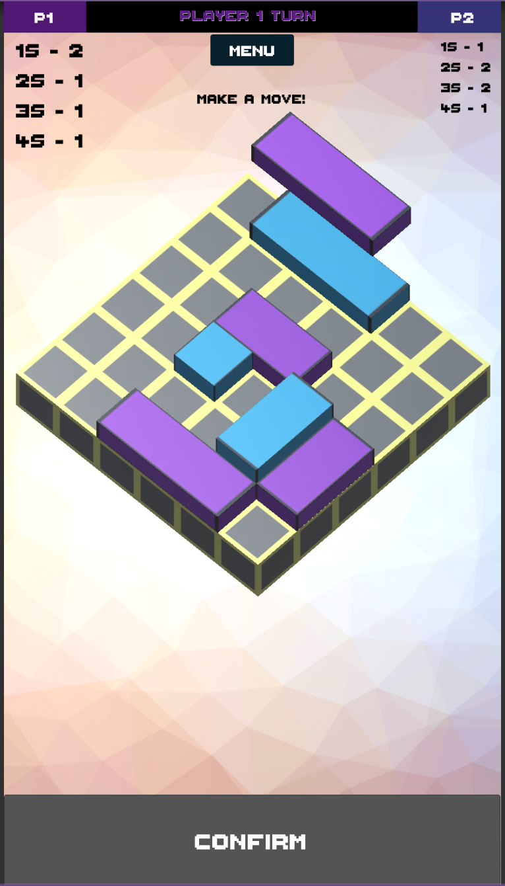

I am in my final year of study at the University of East Anglia and soon to graduate with a first class degree.
During my time at the UEA I have learnt a range of skills including: various programming skills and languages, project planning, working to a specification and time management. Modules taken include: Software Engineering, AI, Machine Learning, Database Systems, Audio-Visual Processing, Analogue and Digital Electronics, Graphics as well as Programming and Data Structures and Algorithms. Some examples of coursework include: AI Chatbot, using NLP within a Flask framework, Speech recogniser and lip reader using Hidden Markov models, board game booking system using Django, and building a 2D platform game in OpenGL.
I achieved an award for distinguished performance in my foundation year, in my first year I won the award for best overall grade, I finished my second year with an average grade of 78.56% and am on track to achieve something similar in my final year.
Although my time at university is coming to a close, I am hoping to find employment within an organisation in which I can continue to push my knowledge, learn more skills and technologies, while solidifying the skills I have already acquired at University. I'm looking for a team based environment where problem solving is at the heart of the work.
I have a keen interest in Game development and design (and consumption), app and website development and generally just learning as many new skills as possible. Outside of my studies I spend my time keeping fit and playing bass guitar in a band.
See below for some examples of my previous work and experience.
In early 2019 I was invited to join a new web development agency to develop front-end web applications for commercial clients. I am responsible for two clients, adding new functionality to their websites, as well as maintenance of those sites. The role also involves contributing to the design and development of in house software, communicating with project managers and assisting other developers. This role has given me valuable experience with PHP, JavaScript, HTML, CSS as well as experience in working on an existing code base and working within a commercial development environment.
During my final year I have worked part time as a teaching assistant for the module ‘Foundations of Computing’. My responsibilities include supporting students with the material taught in their lectures and assisting them during the lab sessions. The support varied from student to student depending on their level of knowledge, from helping with debugging to explaining programming concepts from the ground up. I found sharing the knowledge I had gained during my time at UEA and helping others to learn incredibly rewarding.
After completing the first year of my undergraduate degree, following a competitive interview process, I was accepted onto a 13 week app development internship along with four other students. As a team we followed the SCRUM framework, and in the 13 week period, managed to deliver a high quality working prototype to the product owner. This internship has given me invaluable experience working with React Native, as well as working within a team using the SCRUM framework and using other project management tools such as Jira and Trello.
'SWAP' is a Two-Player, Turn-Based, area denial board game, first devised by a lecturer at the University of East Anglia. For my final year project I was tasked with bringing this new IP to a mobile platform. Unity was my weapon of choice, having already had a small amount of exposure to the game engine. Within two semesters I had developed a well polished version of the game, using a Monte Carlo Tree Search algorithm as the basis for an opponent AI.

This Chatbot was built within a flask framework using NLP to determine a users intent, with the aim to provide the user with the cheapest possible train ticket for their desired journey. The Chatbot can also predict the time of arrival for a delayed train based on historic journey information.
The Chatbot was built from scratch by myself and 2 colleagues. I was responsible for the back-end design and its implementation, as well as the design and implementation of the front-end, and additional features such as voice-to-text and text-to-voice capabilities.
The task here was to build a speaker-dependant Lip Reader and to investigate any underlying issues present in a computer's ability to accurately predict speech from video alone.
This Lip Reader was built using MATLAB to process each frame of a video clip and extract any features that we deemed useful, SFS to label the data, and Hidden Markov Models to predict the utterances. This project followed on from one I had undertaken previously, analysing audio rather than video.
Both the lip reader and speech recogniser were a considerable challenge, both in their implementation, but also in the understanding of the underlying theory. After a huge amount of work, myself and my colleague were able to produce two highly accurate systems, which we were then able to combine, resulting in a audio-visual speech recogniser that mitigated some of the downfalls of the systems when used independently.
Using C++ and OpenGL I developed a 2D, dungeon style, single-player platformer. The Aim of the game, like many other games of this type, was to reach the end within a given time limit, without dying.
First, the underlying controls and physics were developed. A lot of time was spent here making the controls feel responsive. The aim was to simulate real world physics to an extent, but to also allow for mechanics that would make game play slightly more forgiving, and hopefully, more enjoyable. This included: a small amount control while in the air, giving a player that extra chance to make that gap they've been trying to clear; An increase in velocity when sliding, giving players more options when tackling the different obstacle's and enemies. The game included 2 kinds of enemies: Bats, which would track the player and home in on their position once they had been 'agrroed', and Slimes, that patrol a given area and causing damage on impact. The Slimes also provided an alternate function. If the player could successfully land and jump on a Slimes head, they would be rewarded with an increased upward velocity, resulting in a higher jump. This feature allowed for shortcuts to be implemented into the map, meaning more experienced players could complete the level in a faster time by utilizing the Slimes.
This had been one of the most enjoyable projects to work on, as it initially provided quite a challenge in the design and early set up of the game, which once complete allowed for time to refine the control systems as well as the map, enemies, and additional features.
EMAIL - g.marshall.dutton@gmail.com
LINKEDIN - https://tinyurl.com/rgnvqzh
GITHUB - https://github.com/G-Marshall-Dutton
PHONE - 07706060755